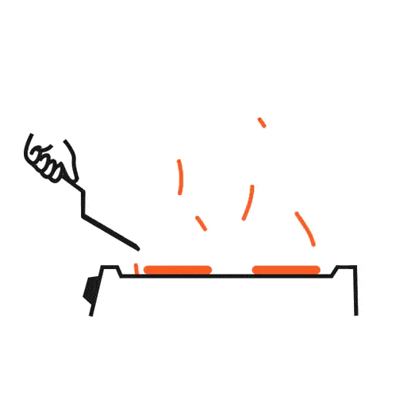

<nb-card [@fadeInUpOnEnter] [@fadeOutOnLeave] class="!border-none mx-auto w-[600px] h-[300px] !mb-0">

    <nb-card-body class="!py-0">

        <nb-stepper orientation="horizontal">
            <nb-step [label]="step1" [stepControl]="firstForm">
                <ng-template #step1>Paso 1</ng-template>
                <h6 class="!text-gray-700 text-center">Datos Generales</h6>

                <form class="mt-5" [formGroup]="firstForm">
                    <div class="flex space-x-4 mt-2">
                        <div class="flex flex-col space-y-4">
                            <nb-form-field>
                                <nb-icon nbPrefix icon="book-outline"></nb-icon>
                                <input shape="semi-round" [status]="getFormStatus('name', firstForm)" formControlName="name" type="text" nbInput placeholder="Nombre">
                            </nb-form-field>

                            <nb-form-field>
                                <nb-icon nbPrefix icon="grid-outline"></nb-icon>
                                <input shape="semi-round" [status]="getFormStatus('category', firstForm)" formControlName="category" type="text" nbInput placeholder="Categoría">
                            </nb-form-field>
                        </div>

                        <div class="relative text-area">
                            <nb-icon [status]="getFormStatus('description', firstForm)" class="absolute top-3 left-3" icon="file-text-outline"></nb-icon>
                            <textarea fullWidth shape="semi-round" id="textarea" [status]="getFormStatus('description', firstForm)" formControlName="description" placeholder="Descripción" class="h-24 !pt-2 !pl-[38px]" nbInput></textarea>
                        </div>

                    </div>

                    <div class="w-full flex space-x-3 mt-6 justify-end">
                        <button (click)="firstForm.invalid? firstForm.markAllAsTouched(): ''" type="submit" hero class="!pl-4 !rounded-xl relative !font-medium" status="primary" nbButton nbStepperNext>
                            Siguiente&nbsp;&nbsp;&nbsp;
                            <nb-icon class="absolute right-2 bottom-[11px]" icon="chevron-right"></nb-icon>
                        </button>
                    </div>
                </form>

            </nb-step>

            <nb-step [label]="step2" [stepControl]="secondForm">
                <ng-template #step2>Paso 2</ng-template>
                <div class="flex items-center justify-center space-x-3 relative">
                    <h6 class="!text-gray-700">Ingredientes</h6>
                    <button class="!pr-[10px]" size="small" status="success" shape="round" outline (click)="addIngredient()" class="!py-[5px] !font-medium" nbButton>
                        Añadir
                    </button>
                </div>

                <perfect-scrollbar class="mt-3.5" [config]="{ wheelSpeed : 0.1 }">
                    <form class="relative h-[100px]" [formGroup]="secondForm">
                        <span class="text-gray-600 w-full flex justify-center pt-10" *ngIf="!getIngredients().controls.length">Agrega ingredientes a tu receta...</span>
                        <div class="mr-3.5" formArrayName="ingredients" *ngFor="let item of getIngredients()?.controls; let i = index">
                            <div [@fadeInDownOnEnter] class="w-full flex space-x-2 justify-between items-center mb-0.5" [formGroupName]="i">
                                <span class="px-2 py-[1px] font-semibold bg-[#36f] text-[10px] text-white rounded-full">{{ i + 1 }}</span>
                                <nb-form-field>
                                    <nb-icon class="!w-4 !h-4" nbPrefix icon="pie-chart-outline"></nb-icon>
                                    <input fullWidth shape="round" [status]="getIngredientFormStatus( 'name', i )" class="!py-1 ingredient-input" nbInput formControlName="name" placeholder="Ingrediente">
                                </nb-form-field>

                                <nb-form-field>
                                    <nb-icon class="!w-4 !h-4" nbPrefix icon="hash-outline"></nb-icon>
                                    <input fullWidth shape="round" [status]="getIngredientFormStatus( 'quantity', i )" class="!py-1 ingredient-input" nbInput formControlName="quantity" placeholder="Cantidad">
                                </nb-form-field>

                                <button (click)="deleteIngredient(i)" shape="round" size="tiny" outline nbButton status="danger">
                                    <nb-icon class="!w-3 !h-3" icon="trash-2"></nb-icon>
                                </button>
                            </div>

                        </div>

                    </form>
                </perfect-scrollbar>

                <div class="w-full absolute bottom-[23px] right-11 flex space-x-4 justify-end">
                    <button (click)="firstForm.markAsPristine();" hero class="!rounded-xl !pr-4 !font-medium relative" status="info" nbButton nbStepperPrevious>
                        <nb-icon class="absolute left-2 bottom-[11px]" icon="chevron-left"></nb-icon>
                        &nbsp;&nbsp;&nbsp;Anterior
                    </button>
                    <button (click)="secondForm.invalid? secondForm.markAllAsTouched(): ''" hero class="!rounded-xl !pl-4 relative !font-medium" status="primary" nbButton nbStepperNext>
                        Siguiente&nbsp;&nbsp;&nbsp;
                        <nb-icon class="absolute right-2 bottom-[11px]" icon="chevron-right"></nb-icon>
                    </button>
                </div>

            </nb-step>

            <nb-step [label]="step3" [stepControl]="thirdForm">
                <ng-template #step3>Paso 3</ng-template>
                <div class="flex items-center justify-center space-x-3 relative">
                    <h6 class="!text-gray-700">Procedimiento</h6>
                    <button class="!pr-[10px]" size="small" status="success" shape="round" outline (click)="addStep()" class="!py-[5px] !font-medium" nbButton>
                        Añadir
                    </button>
                </div>

                <perfect-scrollbar class="mt-3.5" [config]="{ wheelSpeed : 0.1 }">
                    <form class="relative h-[100px]" [formGroup]="thirdForm">
                        <span class="text-gray-600 w-full flex justify-center pt-10" *ngIf="!getSteps().controls.length">Agrega pasos a tu receta...</span>
                        <div class="mr-3.5" formArrayName="steps" *ngFor="let item of getSteps()?.controls; let i = index">
                            <div [@fadeInDownOnEnter] class="w-full flex space-x-2 justify-between items-center mb-0.5">
                                <span class="px-2 py-[1px] font-semibold bg-[#36f] text-[10px] text-white rounded-full">{{ i + 1 }}</span>
                                <nb-form-field class="w-full">
                                    <nb-icon class="!w-4 !h-4" nbPrefix icon="checkmark-circle-outline"></nb-icon>
                                    <input fullWidth shape="round" [status]="getStepFormStatus( i )" class="!py-1 ingredient-input" nbInput [formControlName]="i" [placeholder]="'Paso ' + (i+1)">
                                </nb-form-field>

                                <button (click)="deleteStep(i)" shape="round" size="tiny" outline nbButton status="danger">
                                    <nb-icon class="!w-3 !h-3" icon="trash-2"></nb-icon>
                                </button>
                            </div>

                        </div>

                    </form>
                </perfect-scrollbar>

                <div class="w-full absolute bottom-[23px] right-11 flex space-x-4 justify-end">
                    <button (click)="secondForm.markAsPristine();" hero class="!rounded-xl !pr-4 !font-medium relative" status="info" nbButton nbStepperPrevious>
                        <nb-icon class="absolute left-2 bottom-[11px]" icon="chevron-left"></nb-icon>
                        &nbsp;&nbsp;&nbsp;Anterior
                    </button>
                    <button (click)="thirdForm.invalid? thirdForm.markAllAsTouched(): ''" hero class="!rounded-xl !pl-4 relative !font-medium" status="primary" nbButton nbStepperNext>
                        Siguiente&nbsp;&nbsp;&nbsp;
                        <nb-icon class="absolute right-2 bottom-[11px]" icon="chevron-right"></nb-icon>
                    </button>
                </div>

            </nb-step>

            <nb-step [label]="step4">
                <ngx-spinner template="" bdColor="rgba(255, 255, 255, 1)" [disableAnimation]="false" name="addRecipe" [fullScreen]="false">
                </ngx-spinner>

                <ng-template #step4>Paso 4</ng-template>

                <div class="relative h-[135px] mt-1.5">

                    <div class="flex w-full h-full justify-center items-center">
                        <label [@fadeInOnEnter] *ngIf="previewImages.length === 0" for="file" class="flex flex-col w-full h-full cursor-pointer justify-center items-center rounded-xl">
                            
                            <span class="text-gray-800 font-semibold mt-1">Sube imágenes</span>
                            <span class="text-gray-600 text-xs font-semibold">JPG, PNG, GIF, JPEG</span>
                        </label>
                        <input [disabled]="previewImages.length > 2" ng2FileSelect [uploader]="uploader" multiple class="hidden" id="file" type="file">

                        <perfect-scrollbar class="h-[100px]" *ngIf="previewImages.length > 0" class="mt-3.5" [config]="{ wheelSpeed : 0.1 }">
                            <div class="w-full flex flex-col justify-center space-y-2">
                                <div [@fadeInUpOnEnter] *ngFor="let image of previewImages; let i = index" class="flex py-2 px-2.5 pr-3.5 rounded-lg justify-between items-center">
                                    <nb-user size="medium" [picture]="image.path" [name]="image.name" [title]="((image.size | number: '1.0-2') || '1') + 'MB'"></nb-user>
                                    <button (click)="deleteFile(i)" shape="round" size="tiny" outline nbButton status="danger">
                                        <nb-icon class="!w-3 !h-3" icon="trash-2"></nb-icon>
                                    </button>
                                </div>
                            </div>
                        </perfect-scrollbar>
                    </div>

                </div>

                <div class="w-full absolute bottom-[23px] right-11 flex space-x-4 justify-end">
                    <button (click)="thirdForm.markAsPristine();" hero class="!rounded-xl !pr-4 !font-medium relative" status="info" nbButton nbStepperPrevious>
                        <nb-icon class="absolute left-2 bottom-[11px]" icon="chevron-left"></nb-icon>
                        &nbsp;&nbsp;&nbsp;Anterior
                    </button>
                    <label for="file" class="!rounded-xl !text-white !pl-4 !pr-9 input-label relative !font-medium" nbButton>
                        {{ previewImages.length < 3? 'Subir Imagen' :'Límite Alcanzado' }} <nb-icon class="absolute right-3 bottom-[9px]" icon="cloud-upload-outline">
                            </nb-icon>
                    </label>

                    <button (click)="addRecipe()" *ngIf="previewImages.length > 0" hero class="!rounded-xl !pl-4 !pr-7 relative !font-medium" status="primary" nbButton>
                        Publicar&nbsp;&nbsp;&nbsp;
                        <nb-icon class="absolute right-3 bottom-[12px]" icon="save-outline"></nb-icon>
                    </button>
                    <button *ngIf="previewImages.length === 0" nbTooltip="Sube una imagen" nbTooltipStatus="primary" hero class="!rounded-xl !pl-4 !pr-7 relative !font-medium" status="primary" nbButton>
                        Publicar&nbsp;&nbsp;&nbsp;
                        <nb-icon class="absolute right-3 bottom-[12px]" icon="save-outline"></nb-icon>
                    </button>
                </div>

            </nb-step>

        </nb-stepper>
    </nb-card-body>
</nb-card>